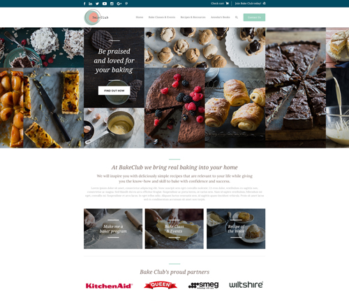
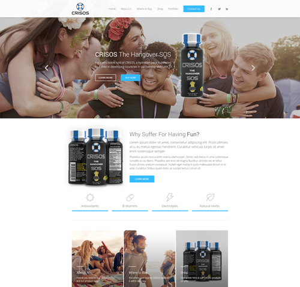
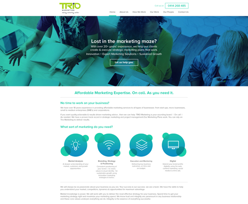

I studied Graphic design at Swinburne TAFE after I finished high school. After being awarded a diploma in Graphic Design I was able to get a pathway into the 3rd year of the Bachelor of Communication Design degree at Swinburne University. I graduated one year later with a Bachelors degree in Communication Design and have been lucky enough to be working within the design industry ever since.
I've worked in the Print and Web design industry, and now I'm aiming to branch into the Web development area of the web industry.
BakeClub is a website I designed at my current job as a web designer at Web123.
CRISOS is a website I designed at my current job as a web designer at Web123.
Trio Marketing is a website I designed at my current job as a web designer at Web123.
